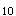

A.缺铁性贫血
B.溶血性贫血
C.再生障碍性贫血
D.地中海贫血
E.巨幼细胞性贫血
参考答案：C
A.安络血
B.肾上腺皮质激素
C.铁剂
D.雄激素
E.维生素C
参考答案：D
A.疼痛、腰背四肢酸痛：与急性溶血有关
B.组织完整性受损：与血小板减少有关
C.焦虑：与持续乏力不愈有关
D.知识缺乏：缺乏疾病相关防治知识
E.活动无耐力：与贫血有关
参考答案：A
A.向患者说明药物副作用
B.肝功能受损需定期检查肝功能
C.停药后副作用不会消失
D.经常检查注射部位，发现硬块应及时报告，必要时作理疗
E.告诉患者需坚持治疗使用3～6个月才能判断是否有效
A.禁食
B.持续胃肠减压
C.代谢性酸中毒
D.输入大量葡萄糖液体
E.腹泻、呕吐
A.9～10g
B.6～8g
C.2～3g
D.4～5g
E.11g
参考答案：B
A.推注过快会加快心脏收缩，导致心律失常
B.浓度过高会抑制心肌，导致心脏骤停
C.推注过快会导致呼吸困难
D.推注过快会引起抽搐
E.浓度过高会刺激静脉，引起静脉炎
A.心力衰竭加重
B.消化不良
C.慢性脑部缺氧
D.电解质紊乱
E.洋地黄中毒
参考答案：E
A.减少洋地黄及利尿剂用量
B.加用抗心律失常药
C.停用利尿剂，继续用洋地黄
D.停用洋地黄，继续用利尿剂
E.停用洋地黄及利尿剂
A.室性期前收缩
B.房室传导阻滞
C.心房颤动
D.房性期前收缩
E.非阵发性交界性心动过速
A.水痘
B.流行性腮腺炎
C.猩红热
D.麻疹
E.风疹
A.咽拭子培养
B.痰培养
C.皮疹涂片培养
D.X线胸片
E.血培养
A.泌尿系统感染
B.肾病综合征
C.急性肾小球肾炎
D.肺炎
E.脑炎
A.阑尾炎
B.盆腔炎
C.胆囊炎合并阑尾炎
D.右输卵管妊娠流产
E.卵巢囊肿蒂扭转
A.葡萄球菌
B.厌氧菌
C.支原体
D.链球菌
E.淋球菌
A.第三代头孢菌素
B.青霉素
C.喹诺酮类
D.大环内酯类
E.氨基糖苷类
A.环形红斑
B.舞蹈病
C.关节炎
D.心肌炎
E.皮下小结
A.A组B型溶血性链球菌
B.大肠杆菌
C.金黄色葡萄球菌
D.A组A型溶血性链球菌
E.肺炎链球菌
A.辅酶Q
B.泼尼松
C.环磷酰胺
D.能量合剂
E.大剂量维生素
A.股疝，绞窄性疝
B.腹股沟斜疝，绞窄性疝
C.腹股沟斜疝，嵌顿性疝
D.腹股沟直疝，嵌顿性疝
E.腹股沟直疝，绞窄性疝
A.排空膀胱
B.给麻醉前药物
C.禁饮食
D.灌肠
E.备皮
题目解析：根据本题可判断该患者属于腹股沟斜疝，绞窄性疝。对于此类患者的术前准备需要禁食禁饮。手术前嘱病人排尿,使膀胱空 ，做好备皮。该患者的手术通常采用微创，不涉及消化道，无需行消化道准备，无需灌肠，D错误。
A.鼓励病人早期下床活动
B.仰卧位，胭部垫枕
C.术后6～12h进流质
D.及时处理尿潴留
E.用丁字带托起阴囊
参考答案：A C
题目解析：疝修补术后，当日取平卧位，膝下垫一软枕，使髋关节微屈，B对。饮食护理根据麻醉方式及病人情况给予饮食指导，经腹腔镜疝修补术者术后6 ~ 12小时，少量饮水或进流质，之后逐渐恢复到软食或普食，但单从此题干无法判断患者的具体手术方式，C错。为避免阴囊内积血、积液和促进淋巴回流，术后可用丁字带托起阴囊，并密切观察阴囊肿胀情况，E对。因麻醉或手术刺激引起尿潴留者，可肌内注射氨甲酰胆碱或针灸，促进膀胱平滑肌的收缩，必要时导尿，D对。年老体弱、复发性疝、绞窄性疝、巨大疝等病人可适当推迟下床活动的时间，A错。
A.休克
B.窒息
C.脱水、酸中毒
D.肺部感染
E.心脏损害
A.护理措施要集中进行
B.避免强光照射
C.鼻饲流质饮食
D.按时使用镇静剂
E.保持病室安静
参考答案：A B D E
A.脓尿
B.管型尿
C.血尿
D.蛋白质
E.低比重尿
A.留取标本前用消毒剂清洗外阴
B.留取中段尿于清洁容器内
C.为提高阳性率，宜留取晨起第1次尿液
D.留取标本前应多饮水
E.如已使用抗生素，宜停药2天后留取尿液
题目解析：中段尿留取需保持无菌条件，A正确；应留在无菌容器中，B错误；晨尿尿液在膀胱中储存6~8h有利于细菌的充分繁殖，提高阳性率，C正确；常规饮水即可，D错误；应在使用抗生素之前或停用抗生素5天以上，E错误。
A.皮肤颜色
B.心率
C.弹足底或插鼻管反应
D.肌肉张力
E.体温
参考答案：A B C D
A.清理呼吸道无效
B.气体交换受损
C.体温过低
D.有受伤的危险
E.有感染的危险
参考答案：A B C D E
A.静脉补液
B.清理呼吸道
C.药物治疗
D.建立呼吸
E.维持肛温36.5～37.2℃
题目解析：保温：整个治疗过程中应注意患儿的保温，可将患儿置于远红外保暖床上，病情稳定后置暖箱中保暖或热水袋保暖，维持患儿肛温36.5~37.5℃。
A.喉头水肿
B.肺气肿
C.胸腔积液
D.支气管哮喘
E.肺炎
参考答案：B D
A.呼吸音增强
B.呼吸音减弱
C.呼气延长
D.过清音
E.桶状胸
参考答案：B C D E
A.流产
B.乳腺肿瘤
C.卵巢过度刺激综合症
D.宫外孕
E.多胎妊娠
A.腹腔穿刺量
B.呕吐量
C.粪便量和尿量
D.出汗量
E.胃肠减压量
参考答案：A B C E
A.不整脉
B.脉搏短绌
C.水冲脉
D.奇脉
E.交替脉
参考答案：A B
A.QRS波群前有逆行的P波
B.QRS波群形态宽大畸形
C.QRS波群提前出现
D.QRS波群后有完全代偿间歇
E.QRS波群时限>0.12s
A.母亲有异常妊娠史的新生儿
B.多产凡
C.巨大儿
D.早产儿
E.异常分娩的新生儿
A.三角肌
B.臀大肌
C.臀中肌
D.股外侧肌
E.臀小肌
参考答案：C D
A.妊娠4个月孕妇
B.术后体质衰弱患者
C.腿部外伤患者
D.心梗急性期患者
E.传染病患者
参考答案：B C D
题目解析：盆浴和淋浴适用于全身情况良好的病人，衰弱、创伤和患心脏病需要卧床休息的病人不宜淋浴和盆浴，妊娠7个月以上的孕妇禁用盆浴。故选项BCD正确。选项D，传染病病人若无禁忌，可以进行盆浴、淋浴，但应根据病情、病种，按隔离原则进行。
A.人具有生理和心理双重属性
B.人具有维持恢复健康的需要，这须由医护人员满足
C.人是一个整体，任何一方面的失调都会对人的健康产生影响
D.人在每个不同的发育阶段都会有不同的需求
E.人不断地与周围环境进行着物质、能量和信息的交换
参考答案：C D E
A.将血液沿管壁缓慢注入
B.泡沫勿注入试管内
C.采血后立即取下针头再注入试管
D.选用干燥注射器及针头
E.避免震荡
A.每日定时更换集尿袋
B.防止引流管受压扭曲
C.每周更换导尿管2次
D.引流管不可高于膀胱
E.鼓励患者多饮水以增加尿量
A.牙周炎早期
B.未明确诊断的急性腹痛
C.外踝扭伤48小时内
D.各种脏器出血
E.孕妇腹部
A.婴幼儿
B.昏迷
C.精神异常
D.心肌梗死患者
E.腹泻
参考答案：A B C
A.铺好的无菌盘
B.正在使用的输氧管
C.正在进行的静脉输液器
D.开启过未污染的无菌包
E.开启过未污染的无菌溶液
A.支气管哮喘
B.休克
C.呼吸困难
D.心力衰竭
E.心包积液
参考答案：A C D E
A.住院病案
B.入院记录
C.门诊病案
D.术后病案
E.个案记录
A.保暖
B.暂停一切治疗
C.意识不清患者设床栏
D.被筒不可过紧，避免足部受压
E.随时观察患者的面色、脉搏、呼吸情况
A.大小便失禁
B.体温异常
C.心跳、呼吸停止
D.神志不清
E.反射性反应消失
参考答案：C E
A.废气
B.废渣
C.废水
D.废铁
E.废塑料
B.呼吸方式
C.精神状态
D.脉搏、血压
E.疼痛减轻
A.护理教育
B.护理科学研究
C.护理管理
D.护理服务
E.护理实践
A.选择100ml以上和清洁玻璃瓶
B.女患者经期不宜留取
C.勿混入粪便于尿中
D.昏迷病员用导尿法留取
E.留晨起第一次尿液约100ml于瓶中
题目解析：一次性尿常规标本容器，A错。除测定尿比重需留100ml以外，其余检验留取30-50ml即可，E错。
A.中华医学会
B.中华护理学会
C.地方病防治委员会
D.中国红十字会
E.中华药学会
参考答案：A B E
A.两人认真核对血液种类、有效期及质量情况
B.血液必须在温水中加温，可在阳光下放置30min
C.一次抽一个血标本送检
D.两人核对血型、交叉配血试验检查结果
E.严格执行血液保存制度
A.生命使您感到烦恼吗?
B.您觉得医院饮食怎么样?
C.您家族有高血压史吗?
D.您一天抽几支烟?
E.您现在有什么感受?
参考答案：B E
A.皮下脂肪丰厚处
B.远离大神经、大血管处
C.肌肉较厚处
D.皮肤无湿疹处
E.皮肤无炎症、硬结处
A.引流尿液，促进体内有毒物质排泄
B.测尿量及比重，了解肾脏血液灌注量
C.排空膀胱，避免尿潴留
D.保持床单位清洁干燥、防止压疮发生
E.保持会阴清洁干燥、预防感染
参考答案：B D E
题目解析：休克病人脏器灌注不良，留置尿管可以便于监测肾脏的功能。这是留置导尿管的最主要的目的，B正确。同时此类患者意识不清或者是不易于活动，留置导尿管可以保持床单为的干燥整洁，避免压疮感染，DE准确。
A.饮食评估
B.影响因素的评估
C.身体评估
D.摄入评估
E.生化评估
A.胸腔积液
C.气胸
D.肺脓肿
A.体格检查
B.脑血管造影
C.头颅CT
D.脑脊液检查
E.脑电图
A.尿白细胞，5个/HP
B.蜡样管型
C.大量红细胞
D.颗粒管型(++)
E.蛋白(++)
A.不全流产
B.难免流产
C.正常妊娠
D.先兆流产
E.习惯性流产
A.胰头及壶腹癌
B.胆囊癌
C.胃癌
D.横结肠癌
E.肝癌
A.低钾血症
B.碱中毒
C.脱水
D.高钾血症
E.酸中毒
A.2～4周
B.1～2个月
C.3～6个月
D.2～3个月
E.1～2周
A.25%
B.10%
C.15%
D.20%
E.5％
A.下腔静脉入口
B.肺动脉入口
C.主动脉入口
D.股静脉入口
E.上腔静脉入口
A.化脓性感染
B.破伤风
C.急性肾衰
D.气性坏疽
E.休克
A.避免外伤
B.严密观察意识和瞳孔的变化
C.不可强力按压肢体
D.禁用口表测试体温
E.保持呼吸道通畅
A.细支气管肺泡癌
B.鳞状上皮细胞癌
C.大细胞未分化癌
D.腺癌
E.小细胞未分化癌
A.血压继续升高
B.瞳孔先缩小后散大
C.意识障碍变浅
D.脉搏变慢
E.呼吸不规则
A.念珠菌阴道炎
B.淋病
C.尖锐湿疣
D.滴虫性阴道炎
E.老年性阴道炎
A.功能低下
B.轻度甲亢
C.重度甲亢
D.中度甲亢
E.正常范围
A.浸润性和远处转移
B.细胞的增殖与分化调控的失调
C.膨胀性生长
D.多源性
E.自行消退
A.20cm
B.75cm
C.50cm
D.10cm
E.90cm
A.严密观察病情，对症治疗
B.调整、适当限制饮食
C.控制肠道内外感染，长期应用广谱抗生素
D.加强护理，防止并发症
E.纠正水、电解质紊乱
A.不饱和脂肪酸多
B.糖含量多
C.SIgA多
D.乳白蛋白含量多
E.钙磷比例合适
A.压力过大
B.压力过小
C.输液管管径粗
D.输液速度过快
E.滴管有裂隙
A.母婴垂直传染
B.输血传染
C.饮食传染
D.间接接触传染
E.性接触传染
A.组织再生功能
B.呼吸功能
C.循环功能
D.免疫功能
E.内分泌功能
A.喂养困难
B.颈静脉怒张
C.多汗
D.肝肿大
E.肺部罗音
A.生长激素缺乏症
B.中枢性尿崩症
C.儿童糖尿病
D.先天性甲状腺功能减低症
E.肾上腺肿瘤
A.嗜碱性粒细胞
B.白细胞
C.脓细胞
D.淋巴细胞
E.嗜酸性粒细胞
A.收缩压<21.3kPa(160mmHg)且舒张压<12.6kPa(95mmHg)
B.收缩压<12kPa(90mmHg)且舒张压<8kPa(60mmHg)
C.收缩压=18.6kPa(140mmHg)且舒张压=12kPa(90mmHg)
D.收缩压<18.6kPa(140mmHg)且舒张压<12kPa(90mmHg)
E.收缩压=21.3kPa(160mmHg)且舒张压=12.6kPa(95mmHg)
A.活跃期的前端
B.潜伏期的前端
C.活跃期的中段
D.潜伏期的末端
E.活跃期的末端
A.氢氯噻嗪
B.硝酸甘油
C.硝普钠
D.利舍平
E.阿替洛尔
A.血液中勿随意加入药物
B.严格执行查对制度
C.血液不能加温、震荡
D.做好血液质量检查
E.输血前肌注异丙嗪
A.大量输注葡萄糖
B.长期使用利尿药
D.长期胃肠减压
E.长期禁食
A.出现血尿
B.尿液中有颗粒或红细胞管型
C.出现贫血
D.出现氮质血症
E.出现少尿、水肿
A.嘱患者屏住呼吸
B.保持引流通畅
C.用两把止血钳夹闭引流管
D.保持引流瓶直立
E.注意观察引流液排出情况
A.5:115：2
B.30：130:2
C.15：230:2
D.15：215：2
E.30:230:2
A.对皮肤黏膜无刺激
B.配制时应使用生理盐水稀释
C.与有机物共存时不会影响消毒效果
D.属于高效消毒剂
E.可用于所有金属制品的消毒
A.症状消失后1周，连续咽拭子培养3次阴性
B.症状消失
C.皮疹脱屑，手掌、足底大片脱皮
D.体温正常
E.皮疹消退
A.否认阶段
B.协议阶段
C.抑郁阶段
D.接受阶段
E.愤怒阶段
A.核素检查
B.血常规
C.超声心动
D.胸片
E.心电图
A.控制权
B.隐私权
C.知情权
D.选择权
E.健康权
A.普萘洛尔
B.甲巯咪唑
C.甲基硫氧嘧啶
D.丙基硫氧嘧啶
E.卡比马唑
A.呼吸性碱中毒
B.痰液阻塞
C.呼吸兴奋剂过量
D.肺性脑病先兆
E.通气量不足
A.植物神经病变
B.冠状动脉粥样硬化
C.肾小球硬化症
D.周围神经病变
E.肾动脉粥样硬化
A.行人工呼吸
B.准备抢救用品
C.使用呼吸中枢兴奋剂
D.使用镇咳药
E.立即置病人头低脚高位
微信关注